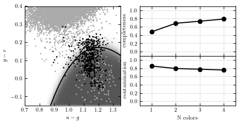

QDA Classification of photometry¶
QDA photometric classification of rr-lyrae stars. This uses averaged photometry from the rr-lyrae catalog and stripe 82 standards catalogs.
completeness [ 0.48175182 0.68613139 0.73722628 0.78832117]
contamination [ 0.85201794 0.79249448 0.77555556 0.75675676]
# Author: Jake VanderPlas <vanderplas@astro.washington.edu>
# License: BSD
# The figure produced by this code is published in the textbook
# "Statistics, Data Mining, and Machine Learning in Astronomy" (2013)
# For more information, see http://astroML.github.com
import numpy as np
from matplotlib import pyplot as plt
from matplotlib import colors
from sklearn.qda import QDA
from astroML.datasets import fetch_rrlyrae_combined
from astroML.utils import split_samples
from astroML.utils import completeness_contamination
#----------------------------------------------------------------------
# get data and split into training & testing sets
X, y = fetch_rrlyrae_combined()
X = X[:, [1, 0, 2, 3]] # rearrange columns for better 1-color results
(X_train, X_test), (y_train, y_test) = split_samples(X, y, [0.75, 0.25],
random_state=0)
N_tot = len(y)
N_st = np.sum(y == 0)
N_rr = N_tot - N_st
N_train = len(y_train)
N_test = len(y_test)
N_plot = 5000 + N_rr
#----------------------------------------------------------------------
# perform QDA
classifiers = []
predictions = []
Ncolors = np.arange(1, X.shape[1] + 1)
for nc in Ncolors:
clf = QDA()
clf.fit(X_train[:, :nc], y_train)
y_pred = clf.predict(X_test[:, :nc])
classifiers.append(clf)
predictions.append(y_pred)
predictions = np.array(predictions)
completeness, contamination = completeness_contamination(predictions, y_test)
print "completeness", completeness
print "contamination", contamination
#------------------------------------------------------------
# Compute the decision boundary
clf = classifiers[1]
xlim = (0.7, 1.35)
ylim = (-0.15, 0.4)
xx, yy = np.meshgrid(np.linspace(xlim[0], xlim[1], 71),
np.linspace(ylim[0], ylim[1], 81))
Z = clf.predict_proba(np.c_[yy.ravel(), xx.ravel()])
Z = Z[:, 1].reshape(xx.shape)
#----------------------------------------------------------------------
# plot the results
fig = plt.figure(figsize=(8, 4))
fig.subplots_adjust(bottom=0.15, top=0.95, hspace=0.0,
left=0.1, right=0.95, wspace=0.2)
# left plot: data and decision boundary
ax = fig.add_subplot(121)
im = ax.scatter(X[-N_plot:, 1], X[-N_plot:, 0], c=y[-N_plot:],
s=4, lw=0, cmap=plt.cm.binary, zorder=2)
im.set_clim(-0.5, 1)
im = ax.imshow(Z, origin='lower', aspect='auto',
cmap=plt.cm.binary, zorder=1,
extent=xlim + ylim)
im.set_clim(0, 1.5)
ax.contour(xx, yy, Z, [0.5], linewidths=2., colors='k')
ax.set_xlim(xlim)
ax.set_ylim(ylim)
ax.set_xlabel('$u-g$')
ax.set_ylabel('$g-r$')
# plot completeness vs Ncolors
ax = fig.add_subplot(222)
ax.plot(Ncolors, completeness, 'o-k', c='k', label='unweighted')
ax.xaxis.set_major_locator(plt.MultipleLocator(1))
ax.yaxis.set_major_locator(plt.MultipleLocator(0.2))
ax.xaxis.set_major_formatter(plt.NullFormatter())
ax.set_ylabel('completeness')
ax.set_xlim(0.5, 4.5)
ax.set_ylim(-0.1, 1.1)
ax.grid(True)
# plot contamination vs Ncolors
ax = fig.add_subplot(224)
ax.plot(Ncolors, contamination, 'o-k', c='k', label='unweighted')
ax.xaxis.set_major_locator(plt.MultipleLocator(1))
ax.yaxis.set_major_locator(plt.MultipleLocator(0.2))
ax.xaxis.set_major_formatter(plt.FormatStrFormatter('%i'))
ax.set_xlabel('N colors')
ax.set_ylabel('contamination')
ax.set_xlim(0.5, 4.5)
ax.set_ylim(-0.1, 1.1)
ax.grid(True)
plt.show()